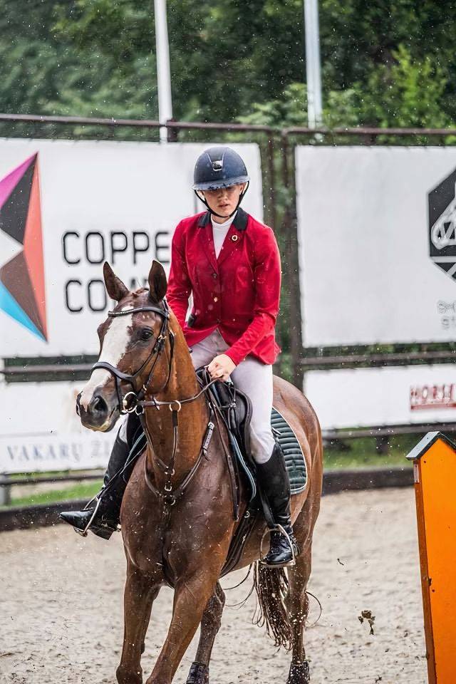

Ema is a powerhouse on the Mercer County Community College Division 1 Tennis Team, where she dominates the court with skill, strategy, and relentless determination. This season, she and her team are set to compete on some of the biggest stages, traveling to South Carolina and Texas to take on top-tier competition. With her precision and passion, she’s ready to make waves in the world of collegiate tennis.
Beyond the court, Ema is just as fierce in the classroom. As a 4.0 GPA student, she’s excelling in her studies while pushing academic boundaries. Through an exclusive program with Mercer County Community College and Princeton University, she’s taking advanced courses at one of the most prestigious institutions in the world. Her intellect, work ethic, and curiosity set her apart as a true academic standout.
Ema’s talents don’t stop there—she’s also an exceptional equestrian, specializing in show jumping and show dancing. Her ability to command a horse with grace and precision is nothing short of breathtaking. Whether soaring over obstacles or showcasing elegance in the ring, she brings the same level of skill and dedication that defines her in sports and academics..